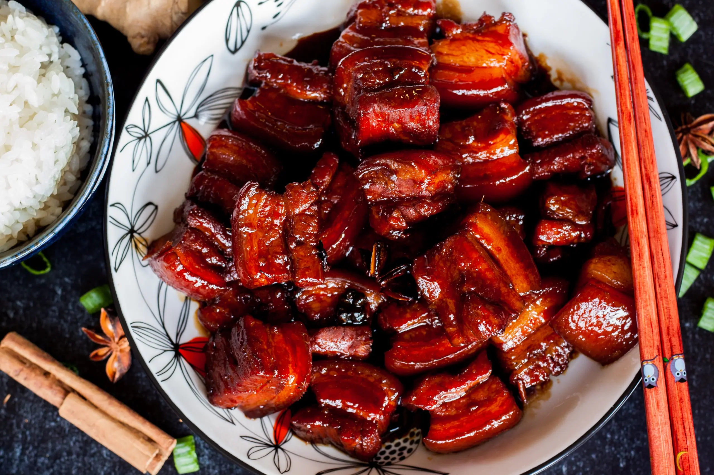

Shanghai Style Braised Pork Belly

Description
Shanghai style braised pork belly is a well-known famous dish throughout China, known for its deep red color
as well as its tenderness.
The pork belly is cooked in such a way that makes it more gelatinous, allowing the
meat to melt in the mouth.
Ingredients
- Pork Belly
- Shaoxing Rice Wine
- Dark and Light Soy Sauce
- Ginger
- Star-anise
- Bay Leaf
- Rock Sugar
- Oil
Steps
- Cut pork belly into 3/4 inch thick pieces.
- Blanch the cut pork belly in boiling water for a few minutes. Remove and set aside pork belly.
- Using a wok on low heat, add oil and sugar.
- Once the sugar is partially melted, turn the heat to medium and add the pork belly. Cook until pork belly is
lightly brown.
- Lower heat to low and add Shaoxing cooking wine, water, spices, and both soy sauces.
- Cover and let the meat simmer for 45 - 60 minutes. Stir every 5 - 10 minutes to prevent burning. Add more water
when necessary.
- Once the meat is tender, turn up the heat and reduce the sauce.